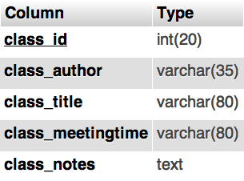

Rubric-Feedback Generator
A Course Management System Module, With a Focus on Assessment
Jenn Schiffer
Advisor: Dr. Emily Hill
Master of Science Project
Computer Science Department
Montclair State University
May 2nd, 2012
The Idea
"Assessment's a four-letter word. No matter how hard I try, I cannot escape it. Help me."
- local university student, Jenn Schiffer
- Education
- Freelancer Decisions
- Project Management
- Initial Ideas
- Designs & Prototypes
- Drafts & Final Product
"Analog" Assessment
- Paper rubrics
- Vocal critique
"Digital" Assessment
- Online rubrics
- Course management systems
Problem
- No template for assessment
- Data storage and dissemination is not guaranteed
- Data is not very useful
- Paper is passé
- Digital solutions are constraining
Solution
Develop a Web-based course management system module with a focus on assessment.
- Can integrate with CS Department's Teaching Information System
- Accessible on multiple device inputs/outputs
- Rubric-centric
- Modular components
That's why I developed the Rubric-Feedback Generator
Introducing Rubric-Feedback Generator
A Web-based, rubric-centric, course management system module.
Built with:
- Apache server
- MySQL database
- PHP
- HTML
- CSS
- JavaScript (jQuery)
Important Parts of this application
Components of Rubric-Feedback Generator
- User - one role, "instructor"
- Class - section of a course
- Assignment - project, homework, exam given to a Class
- Rubric - form used to assess the performance of an individual's completed Assignment
- Grade - collection of data gathered from completion of a Rubric
Users

Classes
A User has 0 or more classes.
A Class belongs to only 1 User.

Assignments
A Class has 0 or more Assignments.
An Assignment belongs to only 1 Class.
Rubrics, aka "The Hard Part"
A User has 0 or more Rubrics.
A Rubric belongs to only 1 User.
An Assignment has only 1 Rubric.
A Rubric can be used by 0 or more Assignments.
Rubrics - Criteria
A Rubric has 0 or more Criteria.
A Criteria belongs to only 1 Rubric.
- Textbox - textbox fieldset for text values
- Radio - radio fieldset with multiple options
- Options - have a text label and integer point values
- Comments - textarea for further instructor comments
Rubrics - Criteria - Options
Criteria with type "Radio" has 0 or more Options.
An Option belongs to only 1 Criteria with type "Radio."
Rubrics - an example, diagrammed
Grades, aka "The Other Hard Part"
An Assignment has 0 or more Grades.
A Grade belongs to 1 Assignment.
Grades - Answers from Rubrics
Grades are the collection of values, or Answers, from a completed Rubric.
- Values of Textbox Criteria
- Values of Radio Criteria
- Values of Radio Criteria comments
Grades - Answers/Values from Rubrics
A Grade has 0 or more Grade-Answers.
A Grade-Answer belongs to only one Grade.
Grades - Disemmination
- View List of Grades
- Email Grades to students
Emailing Grades
In Rubric-Feedback Generator, the User can email Grades
Emailing Grades
The email of a Grade is a printout of the Rubric used to create the Grade, along with the values given by the User when creating the Grade.
Miscellaneous
- Classes, Assignments, Rubrics, and Grades can be edited and deleted, with caution.
- Cross-browser tested.
- Screen-size responsive.
←
→